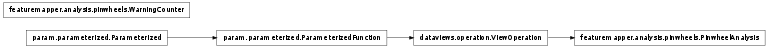

Bases: dataviews.operation.ViewOperation
Given a SheetView or SheetStack of a cyclic feature preference, compute the position of all pinwheel singularities in the map. Optionally includes the contours for the real and imaginary components of the preference map used to determine the pinwheel locations.
Returns the original SheetView input overlayed with a Points object containing the computed pinwheel locations and (optionally) Contours overlays including the real and imaginary contour lines respectively.
Vectorized code to find intersections between contours. All successive duplicate vertices along the input contours must be removed to help avoid division-by-zero errors.
There are cases were no intersection exists (eg. parallel lines) where division by zero and invalid value exceptions occur. These exceptions should be caught as warnings: these edge cases are unavoidable with this algorithm and do not indicate that the output is erroneous.
Locates the pinwheels from the intersection of the real and imaginary contours of of polar OR map.
This functions normalizes an OR map (polar_channel) taking into account the region of interest (ROI). The ROI is specified by values set to 99. Note that this functionality is implemented to reproduce the experimental approach and has not been tested (not required for Topographica simulations)
Turns hue representation to polar representation. Hue representation uses values expected in the range 0-1.0
Identifies the real and imaginary contours in a polar map. Returns the real and imaginary contours as 2D vertex arrays together with the pairs of contours known to intersect. The coordinate system used is specified by the supplied bounds.
Contour plotting requires origin=’upper’ for consistency with image coordinate system.